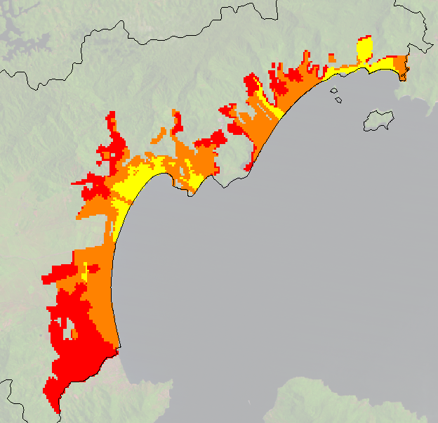
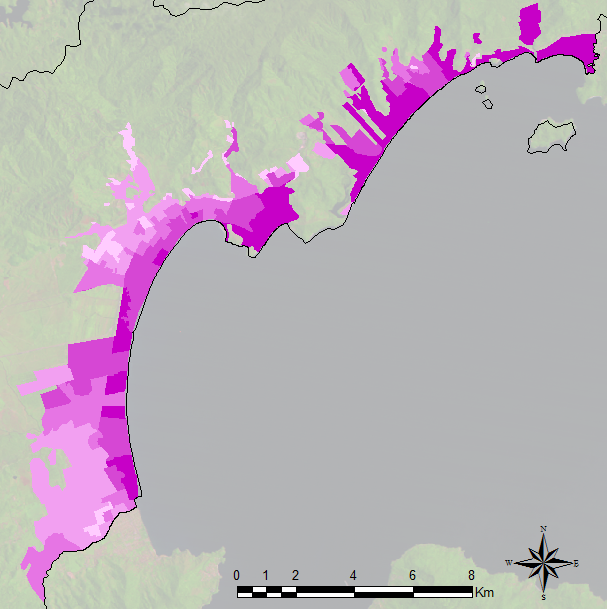
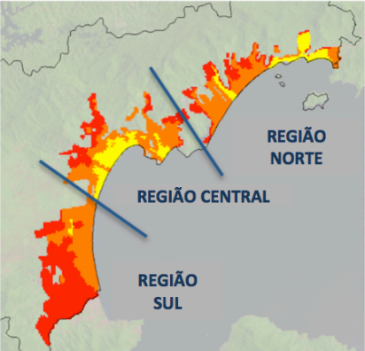
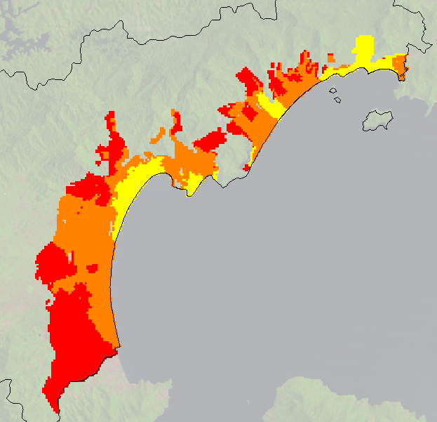
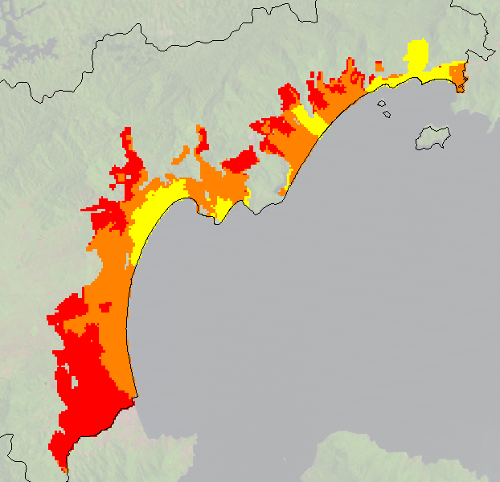
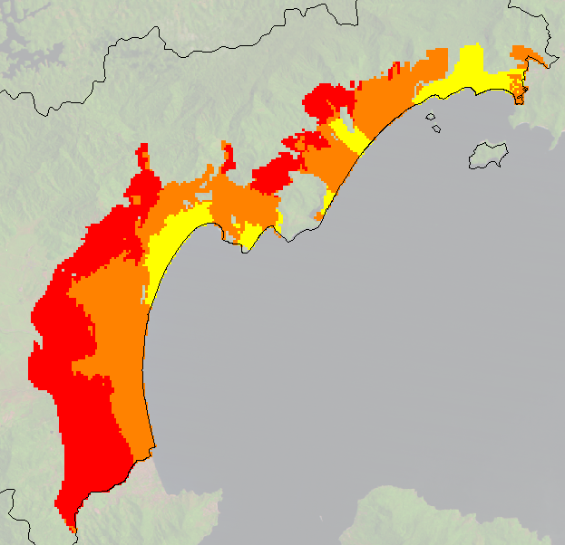
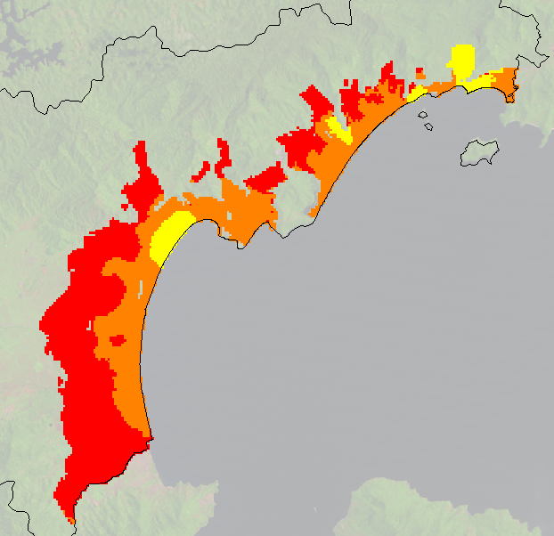
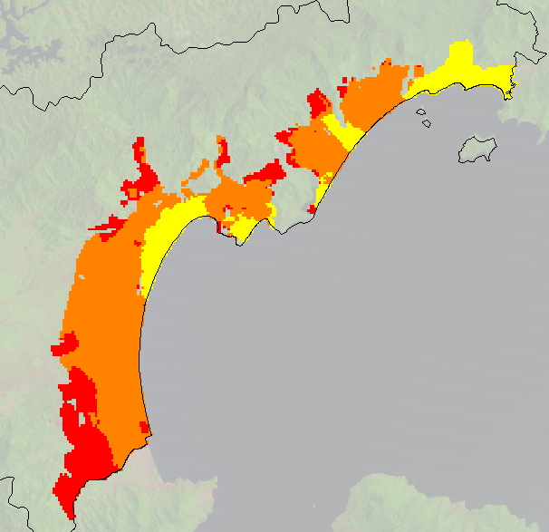

Projects
arapiuns.tview
Automatically created TerraView project file from arapiuns.lua.
| Layer | File | Description |
| "trajectory" | arapiuns_traj.shp | 1 line. |
| "villages" | AllCmmTab_210316OK.shp | 49 points. |
brazil.tview
Automatically created TerraView project file from brazil.lua.
| Layer | File | Description |
| "biomes" | br_biomes.shp | 6 polygons. |
| "states" | br_states.shp | 27 polygons. |
caragua.tview
Automatically created TerraView project file from caragua.lua.
| Layer | File | Description |
| "baseline" | simulation2025_baseline.shp | 216 polygons. |
| "less" | simulation2025_lessgrowth.shp | 136 polygons. |
| "limit" | caragua.shp | 1 polygon. |
| "plus" | simulation2025_plusgrowth.shp | 134 polygons. |
| "poorer" | simulation2025_poorer.shp | 104 polygons. |
| "real" | caragua_classes2010_regioes.shp | 201 polygons. |
| "regions" | regions.shp | 3 polygons. |
| "richer" | simulation2025_richer_final.shp | 134 polygons. |
| "use" | occupational2010.shp | 276 polygons. |
emas.tview
Automatically created TerraView project file from emas.lua.
| Layer | File | Description |
| "cells" | emas.shp | 5514 cells (polygons) with resolution 500 built from layer "limit". |
| "firebreak" | emas-firebreak.shp | 45 lines. |
| "limit" | emas-limit.shp | 1 polygon. |
| "river" | emas-river.shp | 208 lines. |
sp.tview
Automatically created TerraView project file from sp.lua.
| Layer | File | Description |
| "municipalities" | sp_municipalities.shp | 740 polygons. |
temporal-data.tview
Automatically created TerraView project file from temporal-data.lua.
| Layer | File | Description |
| "data" | temporal-data.shp | 9 polygons. |
Data
| AllCmmTab_210316OK.shp | The riverine communities at Arapiuns (PA). |
| arapiuns_traj.shp | Route on the Arapiuns River. |
| br_biomes.shp | Brazilian biomes. |
| br_states.shp | Brazilian states. |
| caragua.shp | Caragua municipality, in Sao Paulo State, Brazil. |
| caragua_classes2010_regioes.shp | Social Classe 2010 Real. |
| caragua_classes2010_regioes.tif | Social Classe 2010 Real. |
| emas.shp | Automatically created file in project "emas.tview". |
| occupational2010.shp | Occupational Classes (IBGE, 2010). |
| regions.shp | Caragua municipality divided into three regions. |
| simulation2025_baseline.shp | Baseline simulation for 2025. |
| simulation2025_lessgrowth.shp | Less growth simulation in 2025. |
| simulation2025_plusgrowth.shp | Plus growth simulation in 2025. |
| simulation2025_poorer.shp | Poorer people in Caragua in 2025. |
| simulation2025_richer_final.shp | Richer people in Caragua in 2025. |
| sp_municipalities.shp | Sao Paulo municipalities. |
| temporal-data.shp | Test of temporal data to create graphic and table. |
| uc_federais_2001.shp | Conservation units of Brazil. |
| uc_federais_2009.shp | Conservation units of Brazil. |
| uc_federais_2016.shp | Conservation units of Brazil. |
| vegtype_2000_5880.tif | Vegetation Type 2000. |
Directory
| arapiuns | Photos of several riverine settlements. |
| biomes | A set of images related to Brazilian biomes collected from the Internet. |
AllCmmTab_210316OK.shp
The riverine communities at Arapiuns (PA).
- Files: AllCmmTab_210316OK.dbf, AllCmmTab_210316OK.prj, AllCmmTab_210316OK.shp, AllCmmTab_210316OK.shx
- Representation: point
- Quantity: 49
- Projection: 'WGS 84', with EPSG: 4326 (PROJ4: '+proj=longlat +datum=WGS84 +no_defs')
- Source: Escada et. al (2013) Infraestrutura, Serviços e Conectividade das Comunidades Ribeirinhas do Arapiuns, PA. Technical report, INPE.
| Attribute | Type | Description |
|---|---|---|
| ACAI | number | Acai. |
| AGUA | number | Water. |
| ARROZ | number | Rice. |
| BFAM | number | Bolsa Familia. |
| CACA | number | Hunting. |
| CASTANHA | number | Chestnut. |
| CFUT | number | Soccer field. |
| CMM2 | string | Name of riverine community. |
| EJA | number | The schools of riverine settlements at Arapiuns. |
| ENERGIA | number | Energy. |
| ENSFUND2 | number | The schools of riverine settlements at Arapiuns. |
| ENSINF | number | The schools of riverine settlements at Arapiuns. |
| FRUTAS | number | Fruits. |
| GADO | number | Cattle. |
| ICON | string | The name of marker icon. |
| IDDCM | number | Age of the community. |
| IGREJAS | number | Church. |
| INST | number | Governmental institutions. |
| LIXO | number | Garbage collection. |
| MAND | number | Manioc. |
| MANT | number | Where people usually buy food. |
| MERENDA | number | Lunch at schools. |
| MINERACAO | number | Mining. |
| NASSOC | number | Local institutions. |
| NPES | number | Population of the community. |
| Nome | string | Name of riverine community. |
| ORELHAO | number | Telephone. |
| PESCA | number | Fischery. |
| PSAU | number | Health center of riverine settlements at Arapiuns. |
| SALE | number | Saude e Alegria NGO. |
| UC | number | Conservation Unit. |
arapiuns_traj.shp
Route on the Arapiuns River.
- Files: arapiuns_traj.dbf, arapiuns_traj.prj, arapiuns_traj.shp, arapiuns_traj.shx
- Representation: line
- Quantity: 1
- Projection: 'WGS 84', with EPSG: 4326 (PROJ4: '+proj=longlat +datum=WGS84 +no_defs')
- Source: Escada et. al (2013) Infraestrutura, Serviços e Conectividade das Comunidades Ribeirinhas do Arapiuns, PA. Technical report, INPE.
br_biomes.shp
Brazilian biomes.
- Files: br_biomes.dbf, br_biomes.prj, br_biomes.shp, br_biomes.shx
- Representation: polygon
- Quantity: 6
- Projection: 'WGS 84', with EPSG: 4326 (PROJ4: '+proj=longlat +datum=WGS84 +no_defs')
- Source: IBGE
| Attribute | Type | Description |
|---|---|---|
| cover | number | Percentage of Brazil's area covered by the biome. |
| link | string | Link to a Wikipedia page with the description of the biome. |
| name | string | Name of the biome. |
br_states.shp
Brazilian states.
- Files: br_states.dbf, br_states.prj, br_states.shp, br_states.shx
- Representation: polygon
- Quantity: 27
- Projection: 'WGS 84', with EPSG: 4326 (PROJ4: '+proj=longlat +datum=WGS84 +no_defs')
- Source: IBGE
| Attribute | Type | Description |
|---|---|---|
| NOMEUF2 | string | Name of the state. |
| SIGLAUF3 | string | An acronym for the state. |
caragua.shp
Caragua municipality, in Sao Paulo State, Brazil.
- Files: caragua.dbf, caragua.prj,caragua.shp, caragua.shx
- Representation: polygon
- Quantity: 1
- Projection: 'WGS 84', with EPSG: 4326 (PROJ4: '+proj=longlat +datum=WGS84 +no_defs')
- Source: IBGE (http://www.ibge.gov.br)
| Attribute | Type | Description |
|---|---|---|
| idh | number | HDI indicators of Caraguatatuba. |
| name | string | Data name. |
| pib | number | Gross Domestic Product (GDP) of Caraguatatuba. |
| population | number | Population of Caraguatatuba. |
caragua_classes2010_regioes.shp

Social Classe 2010 Real.
- Files: caragua_classes2010_regioes.dbf, caragua_classes2010_regioes.prj, caragua_classes2010_regioes.shp, caragua_classes2010_regioes.shx
- Representation: polygon
- Quantity: 201
- Projection: 'WGS 84', with EPSG: 4326 (PROJ4: '+proj=longlat +datum=WGS84 +no_defs')
- Source: Feitosa et. al (2014) URBIS-Caraguá: Um Modelo de Simulação Computacional para a Investigação de Dinâmicas de Ocupação Urbana em Caraguatatuba, SP.
| Attribute | Type | Description |
|---|---|---|
| classe | number | Categorizes the social conditions of households in Caraguatatuba using classes A (3), B (2) or C (1). |
caragua_classes2010_regioes.tif
Social Classe 2010 Real.
- File: caragua_classes2010_regioes.tif
- Representation: raster
- Bands: 1
- Projection: 'WGS 84', with EPSG: 4326 (PROJ4: '+proj=longlat +datum=WGS84 +no_defs')
- Source: Feitosa et. al (2014) URBIS-Caraguá: Um Modelo de Simulação Computacional para a Investigação de Dinâmicas de Ocupação Urbana em Caraguatatuba, SP.
| Band | Dummy | Type | Description |
|---|---|---|---|
| 0 | 65535 | number | Categorizes the social conditions of households in Caraguatatuba using classes A (3), B (2) or C (1). |
emas.shp
Automatically created file with 5514 cells (polygons) with resolution 500 built from layer "limit", in project emas.tview.
- Files: emas.dbf, emas.prj, emas.shp, emas.shx
- Representation: polygon
- Quantity: 5514
- Projection: 'SAD69 / UTM zone 22S', with EPSG: 29192 (PROJ4: '+proj=utm +zone=22 +south +ellps=aust_SA +towgs84=-66.87,4.37,-38.52,0,0,0,0 +units=m +no_defs')
| Attribute | Type | Description |
|---|---|---|
| col | number | Cell's column. |
| firebreak | number | Operation presence from layer "firebreak". |
| id | string | Unique identifier (internal value). |
| river | number | Operation presence from layer "river". |
| row | number | Cell's row. |
occupational2010.shp

Occupational Classes (IBGE, 2010).
- Files: occupational2010.dbf, occupational2010.prj, occupational2010.shp, occupational2010.shx
- Representation: polygon
- Quantity: 276
- Projection: 'WGS 84', with EPSG: 4326 (PROJ4: '+proj=longlat +datum=WGS84 +no_defs')
- Source: Feitosa et. al (2014) URBIS-Caraguá: Um Modelo de Simulação Computacional para a Investigação de Dinâmicas de Ocupação Urbana em Caraguatatuba, SP.
| Attribute | Type | Description |
|---|---|---|
| uso | number | The percentage of houses and apartments inside such areas that is typically used in summer vacations and holidays. |
regions.shp

Caragua municipality divided into three regions.
- Files: regions.dbf, regions.prj, regions.shp, regions.shx
- Representation: polygon
- Quantity: 3
- Projection: 'WGS 84', with EPSG: 4326 (PROJ4: '+proj=longlat +datum=WGS84 +no_defs')
- Source: H. Guerra and P. Andrade
| Attribute | Type | Description |
|---|---|---|
| name | string | Regions of Caraguatatuba, North (1), Central (2) and South (3). |
simulation2025_baseline.shp

Baseline simulation for 2025.
- Files: simulation2025_baseline.dbf, simulation2025_baseline.prj, simulation2025_baseline.shp, simulation2025_baseline.shx
- Representation: polygon
- Quantity: 216
- Projection: 'WGS 84', with EPSG: 4326 (PROJ4: '+proj=longlat +datum=WGS84 +no_defs')
- Source: Feitosa et. al (2014) URBIS-Caraguá: Um Modelo de Simulação Computacional para a Investigação de Dinâmicas de Ocupação Urbana em Caraguatatuba, SP.
| Attribute | Type | Description |
|---|---|---|
| classe | number | Categorizes the social conditions of households in Caraguatatuba using classes A (3), B (2) or C (1). |
simulation2025_lessgrowth.shp

Less growth simulation in 2025.
- Files: simulation2025_lessgrowth.dbf, simulation2025_lessgrowth.prj, simulation2025_lessgrowth.shp, simulation2025_lessgrowth.shx
- Representation: polygon
- Quantity: 136
- Projection: 'WGS 84', with EPSG: 4326 (PROJ4: '+proj=longlat +datum=WGS84 +no_defs')
- Source: Feitosa et. al (2014) URBIS-Caraguá: Um Modelo de Simulação Computacional para a Investigação de Dinâmicas de Ocupação Urbana em Caraguatatuba, SP.
| Attribute | Type | Description |
|---|---|---|
| classe | number | Categorizes the social conditions of households in Caraguatatuba using classes A (3), B (2) or C (1). |
simulation2025_plusgrowth.shp

Plus growth simulation in 2025.
- Files: simulation2025_plusgrowth.dbf, simulation2025_plusgrowth.prj, simulation2025_plusgrowth.shp, simulation2025_plusgrowth.shx
- Representation: polygon
- Quantity: 134
- Projection: 'WGS 84', with EPSG: 4326 (PROJ4: '+proj=longlat +datum=WGS84 +no_defs')
- Source: Feitosa et. al (2014) URBIS-Caraguá: Um Modelo de Simulação Computacional para a Investigação de Dinâmicas de Ocupação Urbana em Caraguatatuba, SP.
| Attribute | Type | Description |
|---|---|---|
| classe | number | Categorizes the social conditions of households in Caraguatatuba using classes A (3), B (2) or C (1). |
simulation2025_poorer.shp

Poorer people in Caragua in 2025.
- Files: simulation2025_poorer.dbf, simulation2025_poorer.prj, simulation2025_poorer.shp, simulation2025_poorer.shx
- Representation: polygon
- Quantity: 104
- Projection: 'WGS 84', with EPSG: 4326 (PROJ4: '+proj=longlat +datum=WGS84 +no_defs')
- Source: Feitosa et. al (2014) URBIS-Caraguá: Um Modelo de Simulação Computacional para a Investigação de Dinâmicas de Ocupação Urbana em Caraguatatuba, SP.
| Attribute | Type | Description |
|---|---|---|
| classe | number | Categorizes the social conditions of households in Caraguatatuba using classes A (3), B (2) or C (1). |
simulation2025_richer_final.shp

Richer people in Caragua in 2025.
- Files: simulation2025_richer_final.dbf, simulation2025_richer_final.prj, simulation2025_richer_final.shp, simulation2025_richer_final.shx
- Representation: polygon
- Quantity: 134
- Projection: 'WGS 84', with EPSG: 4326 (PROJ4: '+proj=longlat +datum=WGS84 +no_defs')
- Source: Feitosa et. al (2014) URBIS-Caraguá: Um Modelo de Simulação Computacional para a Investigação de Dinâmicas de Ocupação Urbana em Caraguatatuba, SP.
| Attribute | Type | Description |
|---|---|---|
| classe | number | Categorizes the social conditions of households in Caraguatatuba using classes A (3), B (2) or C (1). |
sp_municipalities.shp
Sao Paulo municipalities.
- Files: sp_municipalities.dbf, sp_municipalities.prj, sp_municipalities.qpj, sp_municipalities.shp, sp_municipalities.shx
- Representation: polygon
- Quantity: 740
- Projection: 'WGS 84', with EPSG: 4326 (PROJ4: '+proj=longlat +datum=WGS84 +no_defs')
- Source: IBGE
| Attribute | Type | Description |
|---|---|---|
| id | number | Unique identifier. |
| nome | string | Name of the city. |
| pib | number | Gross Domestic Product (GDP). |
| populacao | number | Population size. |
| uf | string | States of Brazil. |
temporal-data.shp
Test of temporal data to create graphic and table.
- Files: temporal-data.dbf, temporal-data.prj, temporal-data.qpj, temporal-data.shp, temporal-data.shx
- Representation: polygon
- Quantity: 9
- Projection: 'WGS 84', with EPSG: 4326 (PROJ4: '+proj=longlat +datum=WGS84 +no_defs')
- Source: CCST.
| Attribute | Type | Description |
|---|---|---|
| AGB3rdM70, BGB3rdM70 | number | Temporal data test bloc 7. |
| B2nd, b2_agb, AGB3rd, BGB3rd, DW3rd, Litter3rd, soma_dg | number | Test data bloc 2. |
| Lit3rdM70, DW3rdM70, AGB3M70cor | number | Test data bloc 5. |
| Shape_Leng, Shape_Area | number | Temporal data test bloc 10. |
| averAGBDeg, b12_3rdInv | number | Test data bloc 6. |
| b12 | number | Test data b12. |
| b3_agb, B2ndM100 | number | Test data bloc 3. |
| b3_perc1, b3_perc2, b3_perc3 | number | Temporal data test bloc 5. |
| col | number | Column. |
| col_1 | number | Identifier col 1. |
| d | number | Identifier d. |
| d_area16, d_inita01, d_forest | number | Temporal data test bloc 6. |
| d_inita, d_area02, d_area03, d_area04, d_area05, d_area06, d_area07, d_area08, d_area09, d_area10, d_area11, d_area12, d_area13, d_area14, d_area15 | number | Temporal data test bloc 2. |
| d_inita05, b4_agb, O, soma_d | number | Test data bloc 4. |
| deterCR | number | Deter. |
| dg_darea06, dg_darea07, dg_darea08, dg_darea09, dg_darea10, dg_darea11, dg_darea12 | number | Temporal data test bloc 3. |
| dg_darea13, dg_darea14 | number | Temporal data test bloc 4. |
| dg_darea15, dg_darea16, dg_darea17, dg_darea18, dg_darea19 | number | Temporal data test bloc 9. |
| f | number | Identifier f. |
| f16, d16, ag_slope_1, e_roads, e_proads, e_railway, e_connmkt, e_hidro, e_beef, e_wood, e_soysug, e_min, e_urban100, as_pland_s, as_pland_m, as_pland_b, c_sett11, c_nsett11, c_hidreopc, c_ucpi12, c_ussapa12 | number | Temporal data test bloc 1. |
| for06_test, for06_area | number | Temporal data test bloc 8. |
| forest02 | number | Forest 02. |
| forest06 | number | Forest 06. |
| id | string | Identifying of label. |
| id_1 | string | Identifier id 1. |
| log_CrRaso, log_Degrad, log_Regen | number | Temporal data test bloc 13. |
| log_pDG06, dAcc_ant, pDG06, TIndigena, area_disp | number | Test data bloc 7. |
| mcwd06, mcwd07, mcwd08, mcwd09, mcwd10, mcwd11, mcwd12, mcwd13, mcwd14, mcwd15, mcwd16 | number | Temporal data test bloc 11. |
| min_mcwd | number | Identifier MCWD. |
| outros | number | outhers. |
| pTrjCrRaso, pTrjDegrad, pTrjRegen | number | Temporal data test bloc 12. |
| p19class27, d_recente, CAR_vazio, f_recente, e_urban10, drec, frec, OBJECTID, Join_Cou_1, TARGET_F_1 | number | Test data bloc 1. |
| row | number | Row. |
| row_1 | number | Identifier row_1. |
uc_federais_2001.shp
Conservation units of Brazil.
- Files: uc_federais_2001.dbf, uc_federais_2001.prj, uc_federais_2001.qpj, uc_federais_2001.shp, uc_federais_2001.shx
- Representation: polygon
- Quantity: 80
- Projection: 'WGS 84', with EPSG: 4326 (PROJ4: '+proj=longlat +datum=WGS84 +no_defs')
- Source: INCT.
| Attribute | Type | Description |
|---|---|---|
| CoordRegio | string | Region coordinates. |
| IdUnidade | string | Unit id. |
| SiglaGrupo | string | Group initials. |
| UF | string | States of Brazil. |
| administra | string | Administration. |
| anoCriacao | number | Creation year. |
| areaHa | number | Area. |
| atoLegal | string | Legal. |
| biomaCRL | string | Biome CRL. |
| biomaIBGE | string | Biome IBGE. |
| categoria | string | Category. |
| codCat | number | Code. |
| codUso | number | Code. |
| codigoCnuc | string | Unique identifier. |
| geometriaA | string | Geometry. |
| municipios | string | Municipalities. |
| nome | string | Name of the unit. |
| perimetroM | number | Perimeter. |
| sigla | string | Initials. |
| tipo | string | Type. |
uc_federais_2009.shp
Conservation units of Brazil.
- Files: uc_federais_2009.dbf, uc_federais_2009.prj, uc_federais_2009.qpj, uc_federais_2009.shp, uc_federais_2009.shx
- Representation: polygon
- Quantity: 130
- Projection: 'WGS 84', with EPSG: 4326 (PROJ4: '+proj=longlat +datum=WGS84 +no_defs')
- Source: INCT.
| Attribute | Type | Description |
|---|---|---|
| CoordRegio | string | Region coordinates. |
| IdUnidade | string | Unit id. |
| SiglaGrupo | string | Group initials. |
| UF | string | States of Brazil. |
| administra | string | Administration. |
| anoCriacao | number | Creation year. |
| areaHa | number | Area. |
| atoLegal | string | Legal. |
| biomaCRL | string | Biome CRL. |
| biomaIBGE | string | Biome IBGE. |
| categoria | string | Category. |
| codCat | number | Code. |
| codUso | number | Code. |
| codigoCnuc | string | Unique identifier. |
| geometriaA | string | Geometry. |
| municipios | string | Municipalities. |
| nome | string | Name of the unit. |
| perimetroM | number | Perimeter. |
| sigla | string | Initials. |
| tipo | string | Type. |
uc_federais_2016.shp
Conservation units of Brazil.
- Files: uc_federais_2016.dbf, uc_federais_2016.prj, uc_federais_2016.qpj, uc_federais_2016.shp, uc_federais_2016.shx
- Representation: polygon
- Quantity: 140
- Projection: 'WGS 84', with EPSG: 4326 (PROJ4: '+proj=longlat +datum=WGS84 +no_defs')
- Source: INCT.
| Attribute | Type | Description |
|---|---|---|
| CoordRegio | string | Region coordinates. |
| IdUnidade | string | Unit id. |
| SiglaGrupo | string | Group initials. |
| UF | string | States of Brazil. |
| administra | string | Administration. |
| anoCriacao | number | Creation year. |
| areaHa | number | Area. |
| atoLegal | string | Legal. |
| biomaCRL | string | Biome CRL. |
| biomaIBGE | string | Biome IBGE. |
| categoria | string | Category. |
| codCat | number | Code. |
| codUso | number | Code. |
| codigoCnuc | string | Unique identifier. |
| geometriaA | string | Geometry. |
| municipios | string | Municipalities. |
| nome | string | Name of the unit. |
| perimetroM | number | Perimeter. |
| sigla | string | Initials. |
| tipo | string | Type. |
vegtype_2000_5880.tif
Vegetation Type 2000.
- File: vegtype_2000_5880.tif
- Representation: raster
- Bands: 1
- Projection: 'SIRGAS 2000 / Brazil Polyconic', with EPSG: 5880 (PROJ4: '+proj=poly +lat_0=0 +lon_0=-54 +x_0=5000000 +y_0=10000000 +ellps=GRS80 +towgs84=0,0,0,0,0,0,0 +units=m +no_defs')
- Source: Inland, INPE.
| Band | Dummy | Type | Description |
|---|---|---|---|
| 0 | -999000000 | number | Vegetation classes. |
arapiuns
Photos of several riverine settlements.
- Files: 49
- Extensions: jpg
- Source: Escada et. al (2013) Infraestrutura, Serviços e Conectividade das Comunidades Ribeirinhas do Arapiuns, PA. Technical report, INPE.
biomes
A set of images related to Brazilian biomes collected from the Internet.
- Files: 6
- Extensions: jpg
- Source: Google and Wikipedia